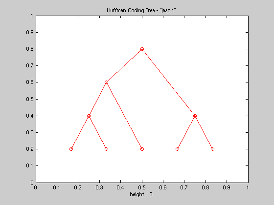
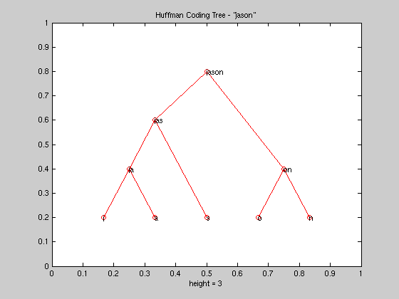
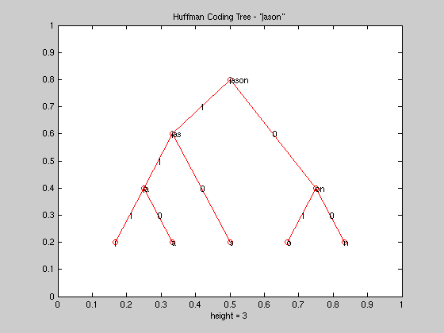

Huffman Encoding Example
The goal of this program is to demonstrate the construction of a huffman encoding tree. The tree is represented as a binary tree using MATLAB's built in treeplot commands. Contruction of the tree as well as the huffman code book will be described in later sections.
Contents
- Initial Setup
- User-Defined Input
- Probability Calculation Flag
- Encoding Bit Calculation
- Console Output - Initial Characters and Their Respective Probabilties
- Initialize The Encoding Array
- Huffman Encoding Process
- Form Huffman Tree Data
- Calculate Tree Parameters
- Plot the Huffman Tree
- Console Output - Tree Symbols and Their Probabilities
- Tree Parameter Extraction
- Label Tree Nodes
- Label Tree Edges
- Huffman Codebook Calculation
- Console Output - Huffman Codebook
Initial Setup
The first piece of code in this program initializes the MATLAB console by clearing all existing state (variables, figures, etc.)
% ************************ % Hufmman Coding Example % % By Jason Agron % ************************ % Setup the MATLAB console clc; clear all; close all;
User-Defined Input
The user is able to define the string that they wish to huffman encode. The probability distribution for individual characters can either be automatically calculated based on the character's ASCII values, or can be manually inputted by the user
% Define the character string my_str = 'jason';
Probability Calculation Flag
Flag used to enable auto-calculation of probabilities * 1 = Auto-calculate * 0 = User-defines probabilities manually
auto_prob = 1; if (auto_prob == 1) % Automatically calculate the probability distribution % Get ASCII version of each character % Each ASCII value represents the probability of finding the character prob_dist = double(my_str); else % Manually define the probability distribution prob_dist = [10 19 30 40 50]; end
Encoding Bit Calculation
Calculate the number of bits to encode with. In a binary system it takes n-bits to encode 2^n items, so the number of bits to use in the huffman encoder is simply the log-base2 of the number of items to encode.
num_bits = ceil(log2(length(prob_dist)))
num_bits =
3
Console Output - Initial Characters and Their Respective Probabilties
Display character vs. probability
disp('Character Probability:'); for i = 1:length(prob_dist) display(strcat(my_str(i),' --> ',num2str(prob_dist(i)))); end total = sum(prob_dist)
Character Probability: j -->106 a -->97 s -->115 o -->111 n -->110 total = 539
Initialize The Encoding Array
A cell array is used to hold the groups of symbols for encoding. The process of huffman encoding combines characters into larger symbols, and a cell is the ideal type of container for managing this type of data in MATLAB. Initialize a cell array (where each cell is a symbol)
for i = 1:length(my_str) sorted_str{i} = my_str(i); end % Save initial set of symbols and probabilities for later use init_str = sorted_str; init_prob = prob_dist;
Huffman Encoding Process
Iteratively sort and combine symbols based on their probabilities. Each iteration sorts the available symbols and then takes the two symbols with the "worst" probabilties and combines them into a single symbol for the next iteration. The loop halts when only a single symbol remains.
sorted_prob = prob_dist; rear = 1; while (length(sorted_prob) > 1) % Sort probs [sorted_prob,indeces] = sort(sorted_prob,'ascend'); % Sort string based on indeces sorted_str = sorted_str(indeces); % Create new symbol new_node = strcat(sorted_str(2),sorted_str(1)); new_prob = sum(sorted_prob(1:2)); % Dequeue used symbols from "old" queue sorted_str = sorted_str(3:length(sorted_str)); sorted_prob = sorted_prob(3:length(sorted_prob)); % Add new symbol back to "old" queue sorted_str = [sorted_str, new_node]; sorted_prob = [sorted_prob, new_prob]; % Add new symbol to "new" queue newq_str(rear) = new_node; newq_prob(rear) = new_prob; rear = rear + 1; end
Form Huffman Tree Data
Get all elements for the tree (symbols and probabilities) by concatenating the original set of symbols with the new combined symbols and probabilities
tree = [newq_str,init_str]; tree_prob = [newq_prob, init_prob]; % Sort all tree elements [sorted_tree_prob,indeces] = sort(tree_prob,'descend'); sorted_tree = tree(indeces);
Calculate Tree Parameters
Calculate parent relationships for all tree elements. This will allow the treeplot command to realize the correct tree structure.
parent(1) = 0; num_children = 2; for i = 2:length(sorted_tree) % Extract my symbol me = sorted_tree{i}; % Find my parent's symbol (search until shortest match is found) count = 1; parent_maybe = sorted_tree{i-count}; diff = strfind(parent_maybe,me); while (isempty(diff)) count = count + 1; parent_maybe = sorted_tree{i-count}; diff = strfind(parent_maybe,me); end parent(i) = i - count; end
Plot the Huffman Tree
This is easily done using the treeplot command whose argument is the array that contains the parent relationships for each node.
treeplot(parent); title(strcat('Huffman Coding Tree - "',my_str,'"'));

Console Output - Tree Symbols and Their Probabilities
Print out tree in text form
display(sorted_tree) display(sorted_tree_prob)
sorted_tree =
'jason' 'jas' 'on' 'ja' 's' 'o' 'n' 'j' 'a'
sorted_tree_prob =
539 318 221 203 115 111 110 106 97
Tree Parameter Extraction
Extract binary tree parameters. These parameters include the (x,y) coordinates of each node so that we can accurately place label on the tree.
[xs,ys,h,s] = treelayout(parent);
Label Tree Nodes
Place labels on each tree node
text(xs,ys,sorted_tree);

Label Tree Edges
Put weights on the tree. The slope of each edge indicates whether it is a left-branch or a right-branch. Left-branches have positive slope and are labelled with a '1', while right-branches have negative slope and are labelled with a '0'. The labels for the weights are placed at the midpoint of each edge. Calculate mid-points for each node
for i = 2:length(sorted_tree) % Get my coordinate my_x = xs(i); my_y = ys(i); % Get parent coordinate parent_x = xs(parent(i)); parent_y = ys(parent(i)); % Calculate weight coordinate (midpoint) mid_x = (my_x + parent_x)/2; mid_y = (my_y + parent_y)/2; % Calculate weight (positive slope = 1, negative = 0) slope = (parent_y - my_y)/(parent_x - my_x); if (slope > 0) weight(i) = 1; else weight(i) = 0; end text(mid_x,mid_y,num2str(weight(i))); end

Huffman Codebook Calculation
A huffman codebook can be calculated by traversing the huffman tree while recording the weights encountered while travelling to each node. Calculate codebook
for i = 1:length(sorted_tree) % Initialize code code{i} = ''; % Loop until root is found index = i; p = parent(index); while(p ~= 0) % Turn weight into code symbol w = num2str(weight(index)); % Concatenate code symbol code{i} = strcat(w,code{i}); % Continue towards root index = parent(index); p = parent(index); end end
Console Output - Huffman Codebook
Display code book in textual form
codeBook = [sorted_tree', code']
codeBook =
'jason' ''
'jas' '1'
'on' '0'
'ja' '11'
's' '10'
'o' '01'
'n' '00'
'j' '111'
'a' '110'